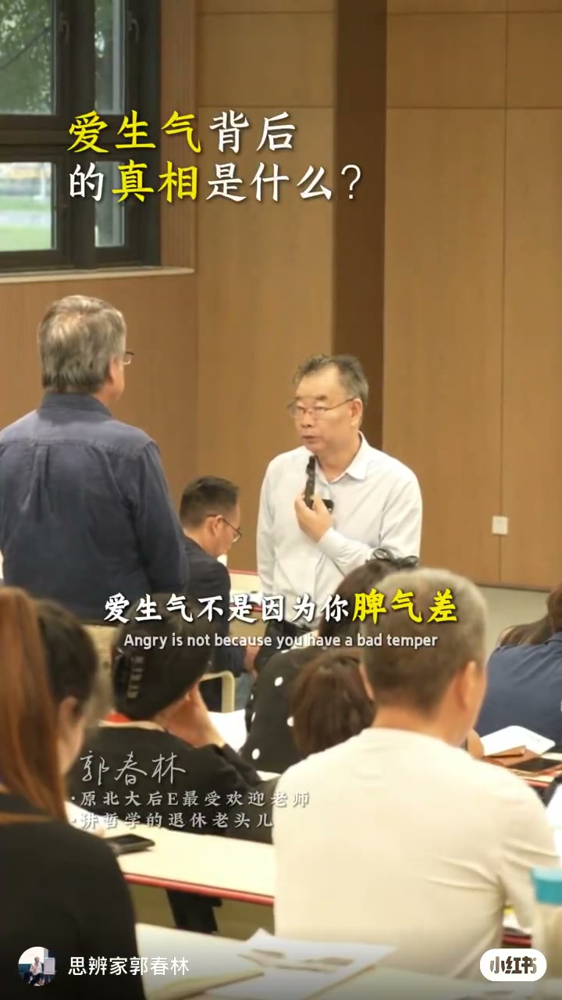
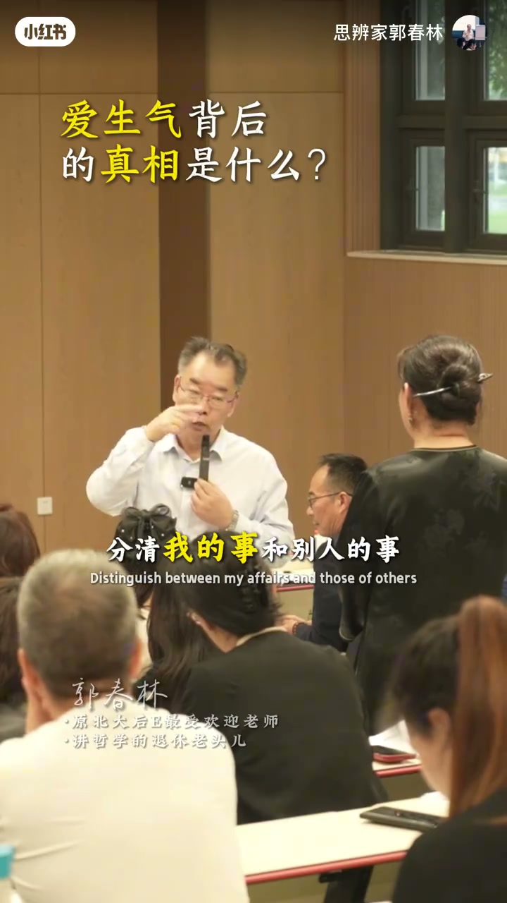
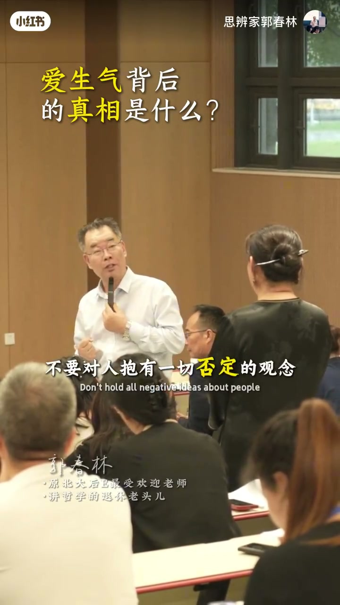

内容要点
思辨家郭春林讲座短片提出：爱生气不是因为脾气差，真相往往是「必须型思维」——把期望当成必须，方案一偏差就愤怒。画面关键词包括方案偏差、分清我的事和别人的事；后半段口播强调没有什么是必须的，通过心理暗示拔除观念，「不生气你就赢了，情绪就是你一生的风水」。前半约两分钟口播极少，主要依据画面字幕重建。
知识结构
爱生气不是因为脾气差；标题追问生气背后的真相，讲座现场开场。
画面点出「方案偏差」：计划/期望与现实错位，容易点燃怒气。
分清我的事和别人的事；不要把他人事务内化为自己的必须。
不是所有事都有道理；没有什么是必须的；反复暗示后改掉必须型思维，情绪稳住，身体事业家庭财运跟着好。
怒气常来自「必须如此」的认知框架，而不是性格标签；把必须改成尽力、把别人的事还给别人，情绪才有可操作的抓手。这是讲座观点，不是医学诊断。
00:00-01:00开场反常识：爱生气≠脾气差
讲座现场字幕大字：「爱生气背后的真相是什么？」中英对照点题「爱生气不是因为你脾气差」。作者介绍为原北大后E受欢迎老师、讲哲学的退休老头儿。开场就把怒气从「性格缺陷」挪到「认知结构」上讨论。

01:00-02:00方案偏差，与分清我和别人的事
俯拍工作画面叠出关键词「方案偏差 / scheme deviation」——当现实偏离自己认定的方案，怒气容易被点燃。随后讲座画面给出行动句：「分清我的事和别人的事」。边界一旦模糊，别人的迟缓、拒绝或不配合都会被体验成「我被冒犯」。
脚注：约00:03–02:00 区间 Whisper 几乎无有效口播，以上两段依据画面大字字幕与讲座场面重建，不虚构具体讲稿逐句。

02:00-03:11拔除必须型思维：不生气你就赢了
口播恢复后连续抛出纠正句：「不是所有事都有道理」「一切否定的观念」「所有的事情是尽力而为的」「没有什么东西是必须的」，并暗示自己可以百分百地掌控自己的想法——「我们是自己身体的主人」。通过不断反复的心理暗示，才能拔除根深蒂固的观念。
收束金句：「一定要记住，不生气你就赢了。情绪就是你一生的风水。当你改掉必须型思维，把心态放平，把情绪稳住，你的身体、事业、家庭、财运都会跟着越来越好。」观点归属为郭春林个人讲座立场；「财运」等表述按励志修辞理解，不作因果承诺。

完整转录（20段）
以下文本由 Whisper medium 模型自动转录，可能存在少量识别误差，已尽可能修正。
爱生气不是因为你脾气差
不是所有事都有道理不是所有
一切否定的观念
所有的事情是尽力而为的
没有什么东西是必须的
然后暗示自己可以百分百地掌控自己的想法
我们是自己身体的主人
通过不断反复的心理暗示
我们才能真正彻底拔除掉自己一些根深蒂固的观念
一定要记住
不生气你就赢了
情绪就是你一生的风水
当你改掉必须型思维
把心态放平
把情绪稳住
你的身体
事业
家庭
财运
都会跟著越来越好